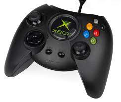

how the xbox controller evolved overtime
it started of a a massive chunky controller that was had to be held in the hands of gamers
after this conroler it was then adapted to the xbox 360 controlers which was smaller and less chunky.
Eventualy it was adapted to the controler we all know and love today. The xblx one controller with it being able to be held in the hands of gamers whith